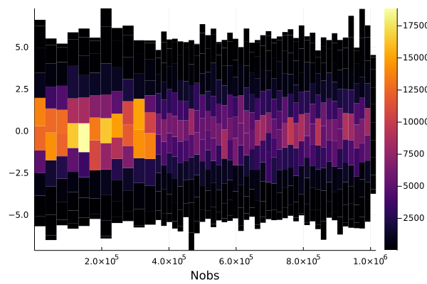

Plotting
StatsPlots
JuliaDB has all access to all the power and flexibility of Plots via StatsPlots and the @df macro.
using JuliaDB, StatsPlots
t = table((x = randn(100), y = randn(100)))
@df t scatter(:x, :y)Plotting Big Data
For large datasets, it isn't feasible to render every data point. The OnlineStats package provides a number of data structures for big data visualization that can be created via the reduce and groupreduce functions.
- Example data:
using JuliaDB, Plots, OnlineStats
x = randn(10^6)
y = x + randn(10^6)
z = x .> 1
z2 = (x .+ y) .> 0
t = table((x=x, y=y, z=z, z2=z2))Table with 1000000 rows, 4 columns:
x y z z2
───────────────────────────────────
0.883249 1.32075 false true
0.200336 -0.989121 false false
-0.421694 -0.397641 false false
2.23396 2.1823 true true
-0.881753 -1.28863 false false
-1.35999 -2.53224 false false
-1.54985 -1.12409 false false
1.65567 2.28825 true true
-0.0242967 -1.69111 false false
⋮
0.246494 -0.169448 false true
0.744356 1.07494 false true
0.0935734 -0.237658 false false
-1.48985 -1.91953 false false
0.464175 0.346606 false true
0.761747 1.49327 false true
-0.859193 -0.990849 false false
0.672742 1.31158 false trueMosaic Plots
A mosaic plot visualizes the bivariate distribution of two categorical variables.
o = reduce(Mosaic(Bool, Bool), t; select = (3, 4))
plot(o)
Histograms
grp = groupreduce(Hist(-5:.5:5), t, :z, select = :x)
plot(plot.(select(grp, 2))...; link=:all)grp = groupreduce(KHist(20), t, :z, select = :x)
plot(plot.(select(grp, 2))...; link = :all)
Partition and IndexedPartition
Partition(stat, n)summarizes a univariate data stream.- The
statis fitted overnapproximately equal-sized pieces.
- The
IndexedPartition(T, stat, n)summarizes a bivariate data stream.- The
statis fitted overnpieces covering the domain of another variable of typeT.
- The
o = reduce(Partition(KHist(10), 50), t; select=:y)
plot(o)
o = reduce(IndexedPartition(Float64, KHist(10), 50), t; select=(:x, :y))
plot(o)GroupBy
o = reduce(GroupBy{Bool}(KHist(20)), t; select = (:z, :x))
plot(o)
png("groupby.png"); nothing # hide
Convenience function for Partition and IndexedPartition
You can also use the partitionplot function, a slightly less verbose way of plotting Partition and IndexedPartition objects.
# x by itself
partitionplot(t, :x, stat = Extrema())┌ Warning: `FTSeries(args...; kw...)` is deprecated. Use `FilterTransform(Series(args...; kw...))` instead.
│ caller = ip:0x0
└ @ Core :-1# y by x, grouped by z
partitionplot(t, :x, :y, stat = Extrema(), by = :z)
savefig("partitionplot2.png"); nothing # hide